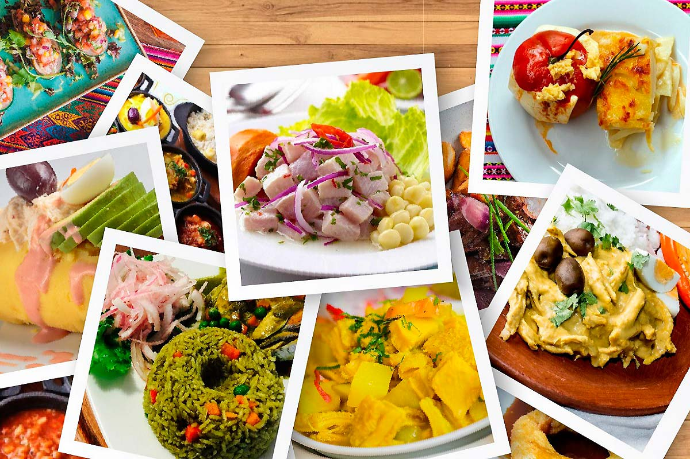

| El Peru primero,gran país |
|
En nuestro país, encontramos una diversidad de expresiones culturales y artísticas. Si bien todos somos peruanos, cada región tiene su propia forma de expresarse en el habla, en la comida, en sus danzas, en sus fiestas. |
 |
 |
Por ejemplo, en cuanto al arte culinario de cada región, tenemos una lista interminable de platos típicos. En la costa están el cebiche, el ají de gallina, el arroz con pato, el rocoto relleno, los ricos picarones y la mazamorra morada, entre otros. En la sierra tenemos la pachamanca, el shámbar, el picante de cuy, la trucha frita, la refrescante chicha de jora, entre otros deliciosos manjares. En la selva, la cecina con tacacho, la ensalada de chonta, los juanes y la sopa inchicapi son los platos principales.
<